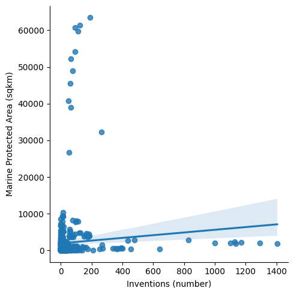
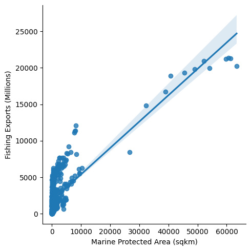
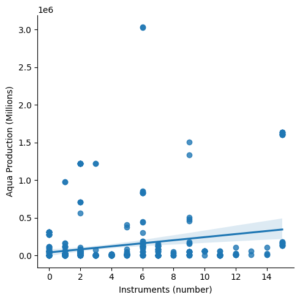
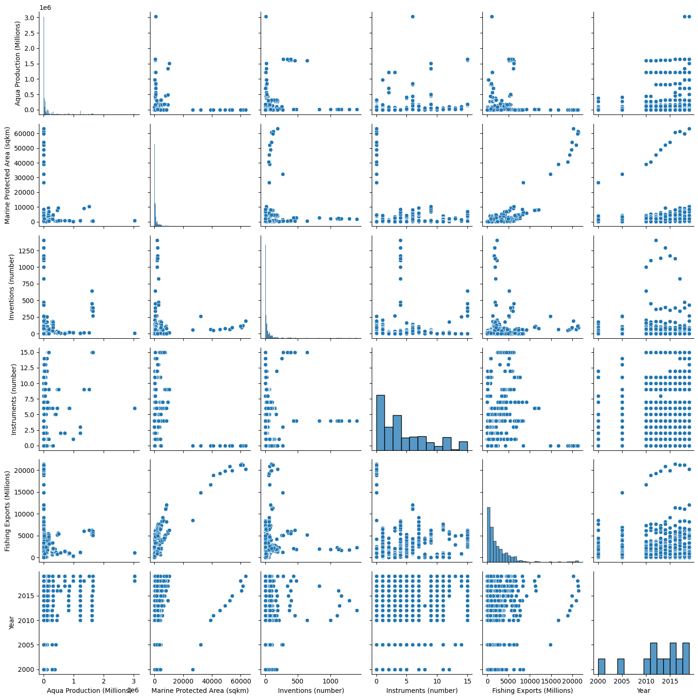
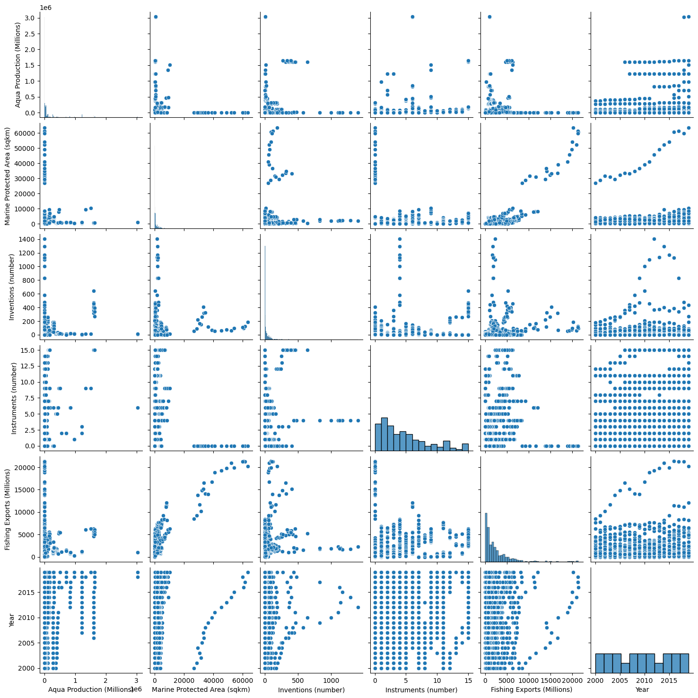

Within this section I will complete the EDA specifically relating to multivariate analysis. Multivariate analysis is analysis involving two or more variables. It is important to note that the a few of the EDA steps I completed under the univariate tab. I will always link when mentioned.
Data Understanding and Descriptive Statistics
To see the analysis created for data understanding and descriptive statistics follow this link here. This analysis was created under the univariate tab.
Data Visualization
Scatter Plot for Inventions and Marine Protected Area
This scatterplot shows the correlation between inventions and marine protected area. As you can see, there seems to be little to no correlation between these two variables.
Code
import matplotlib.pyplot as pltimport numpy as npimport pandas as pdimport seaborn as sns#Importing Datamerged = pd.read_csv("/Users/kendallgilbert/dsan-5000-project-kendallgilbert180/dsan-website/5000-website/data/01-modified-data/merged.csv")#Seaborn Scatter Plotsns.lmplot( data=merged, x="Inventions (number)", y="Marine Protected Area (sqkm)" )plt.tight_layout()plt.show()

Scatterplot for Marine Protected Area and Fishing Exports
Different than the scatterplot shown above, there seems to be a slight correlation for marine protected area. As marine protected area increases, so does fishing exports. This makes sense as cleaner oceans results in an abundance of marine life.
Code
sns.lmplot( data=merged, x="Marine Protected Area (sqkm)", y="Fishing Exports (Millions)" )plt.tight_layout()plt.show()

Scatterplot for Instruments and Aquaculture Production
This scatterplot shows that their is no correlation between policy instruments and aquaculture production.
Code
sns.lmplot( data=merged, x="Instruments (number)", y="Aqua Production (Millions)" )plt.tight_layout()plt.show()

Correlation Analysis
Correlation analysis is completed in order to understand if there is a relationship between variables. Below, I have used the pearson correlation to shows the correlations between variables. The pearson correlation is the most common way of measuring linear relationships between variables within a dataset.
Immediately, we can see that there a very small correlation within this dataset. A majority of the correlations are extremely close to 0 meaning NO correlation and some are negative meaning they have a negative correlation. Although, there is one correlations that seem to stand out. This is the correlation between Fishing Exports and Marine Protected Area (0.8). To see the scatter plot between these two variables scroll up!
Correlations are important to pay attention to as they can guide variable selection in machine learning. For example, I may not want to use variables with high correlations because they could lead to overfitting.
Pairplots
This pairplot is another way to create scatterplot between all the variables as well as univariate histograms. It helps us explore all the relationships and make sure we have not missed any crucial relationships.
Code
sns.pairplot(merged)plt.tight_layout()plt.show()

Outliers
There seem to be outliers and they can easily be seen in the scatterplots created above. The first outlier I want to look into is the high value in aqua-culture production.
Code
# Aquaculture Scatterplot to find outlier. sns.lmplot( data=merged, x="Instruments (number)", y="Aqua Production (Millions)")highest_x = merged["Instruments (number)"].max()highest_y = merged["Aqua Production (Millions)"].max()print("Highest value: ({}, {})".format(highest_x, highest_y))plt.tight_layout()plt.show()
Highest value: (15, 3036163.0)

Code
# Finding Out what is causing this outlierdesired_y =3036163.0desired_rows = merged[merged["Aqua Production (Millions)"] == desired_y]print(desired_rows)
Aqua Production (Millions) Marine Protected Area (sqkm) \
473 3036163.0 889.75
Inventions (number) Instruments (number) Fishing Exports (Millions) \
473 10.08 6.0 1059.83
Country Year
473 Australia 2019
This outlier comes from Australias aquaculture production in 2019! After doing a little research I learned that the market size of the Aquaculture industry in Australia is measured at $2.7bn. You can find more about Australia’s aquaculture industry here!
Methods and Findings
Overall this multivariate analysis helped me understand relationships between variables within this dataset. It can be understood that there aren’t many strong correlations. Although, it is interesting to pay attention to the relationships that do exist like marine protected area and fishing exports. This relationship makes sense as cleaner water would result in an abundance of fish leading to higher fishing exports.
Overall, this univariate and multivariate data analysis helped me understand that this data set has the potential to display the need for ocean sustainability in addition to what is being done and how it has helped so far.
By the end of the project, I believe the variables within this dataset will act a tool for organizations, local governments and developers to refence in regards to understanding ocean sustainability and taking action towards more ocean sustainability.
For example, a local official could see trends within a country with an increase in MPA and see what variables have helped this result as well as what has come from this increase in MPA.